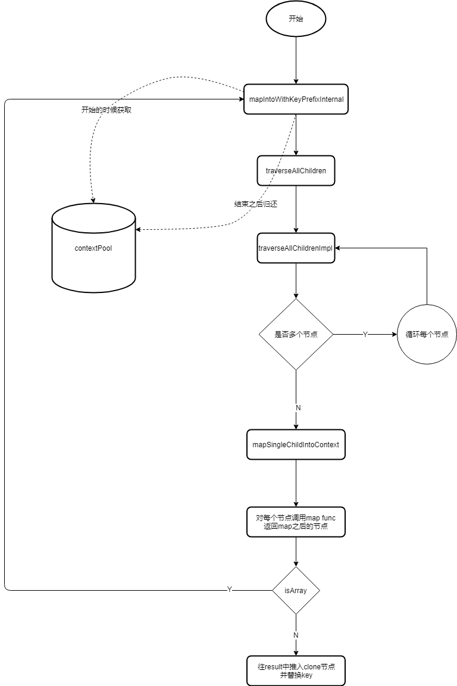

# React 源码解析（一）JSX 转换
React 源码系列的第一章，这一章从 jsx 代码转换开始，分析一下 react 的源码部分。
React 将源码划分成了很多个单独的包，我们主要分析这几个：
- react
- react-dom
- react-reconciler
- scheduler
关于 react 版本
此系列文章中，react 版本为 16.9.0，react-dom 版本为 16.9.0。
本篇文章提纲。
- JSX 文件转换
- React.Children 原理
# JSX 文件转换
我们在写 react 项目时，都会写 jsx 组件，jsx 组件经过编译后，会转成相应的 js 文件。
我们一起进入到 babel 的官方，看一下我们平时写的 jsx 会被编译成什么样子？
function Comp() {
return <span>hello</span>;
}
function App() {
return (
<div id="test">
<Comp />
<ul>
<li>1</li>
<li>2</li>
</ul>
</div>
);
}
2
3
4
5
6
7
8
9
10
11
12
13
14
15
经过 babel 编译后，生成如下代码：
function Comp() {
return React.createElement("span", null, "hello");
}
function App() {
return React.createElement(
"div",
{
id: "test"
},
React.createElement(Comp, null),
React.createElement(
"ul",
null,
React.createElement("li", null, "1"),
React.createElement("li", null, "2")
)
);
}
2
3
4
5
6
7
8
9
10
11
12
13
14
15
16
17
18
19
可以看到，经过 babel 编译后的代码，是将 jsx 转换成 React.createElement 的函数调用模式。我们再来看一下 React.createElement 在做什么？
const ReactElement = function(type, key, ref, self, source, owner, props) {
const element = {
$$typeof: REACT_ELEMENT_TYPE,
type: type,
key: key,
ref: ref,
props: props,
_owner: owner
};
return element;
};
function createElement(type, config, children) {
return ReactElement(
type,
key,
ref,
self,
source,
ReactCurrentOwner.current,
props
);
}
2
3
4
5
6
7
8
9
10
11
12
13
14
15
16
17
18
19
20
21
22
23
可以看到 React.createElement 函数返回的是一个特定格式的 js 对象。
# React.Children 原理
这里介绍一下 React.Children，这个方法封装了处理 props.children 的方法。
import { forEach, map, count, toArray, only } from "./ReactChildren";
const React = {
Children: {
map,
forEach,
count,
toArray,
only
}
};
2
3
4
5
6
7
8
9
10
以 React.Children.map 为例，具体的流程如下图所示。

# ContextPool
看完流程图，你可能有疑惑，contextPool 是用来干嘛的？
试想一下，如果每次构建节点，都要构建指定格式的 obj，用完之后，被系统垃圾回收掉。对于内存来说，就会不断进行内存分配，内存释放的过程，通过任务管理器查看内存状态时，就会看到锯齿形状的内存图。
为了避免这种情况，react 使用一个 contextPool 来进行复用对象复用，当需要构建 obj 时，直接从 contextPool 里获取第一个 obj，重新进行赋值就可以了，当使用完成后，再将这条数据内容清空，加入到 contextPool 里，以供下次使用。
contextPool 部分代码如下：
const POOL_SIZE = 10;
const traverseContextPool = [];
// 复用完毕之后，清空操作，如果 pool 小于 10，就会加入到 contextPool 中。
function releaseTraverseContext(traverseContext) {
// 使用完成，清空对象
traverseContext.result = null;
traverseContext.keyPrefix = null;
traverseContext.func = null;
traverseContext.context = null;
traverseContext.count = 0;
if (traverseContextPool.length < POOL_SIZE) {
// 加入到 pool
traverseContextPool.push(traverseContext);
}
}
// 获取 contextPool 中的对象
function getPooledTraverseContext(
mapResult,
keyPrefix,
mapFunction,
mapContext
) {
if (traverseContextPool.length) {
// 复用对象
const traverseContext = traverseContextPool.pop();
traverseContext.result = mapResult;
traverseContext.keyPrefix = keyPrefix;
traverseContext.func = mapFunction;
traverseContext.context = mapContext;
traverseContext.count = 0;
return traverseContext;
} else {
// 第一次，返回新对象
return {
result: mapResult,
keyPrefix: keyPrefix,
func: mapFunction,
context: mapContext,
count: 0
};
}
}
2
3
4
5
6
7
8
9
10
11
12
13
14
15
16
17
18
19
20
21
22
23
24
25
26
27
28
29
30
31
32
33
34
35
36
37
38
39
40
41
42
43
44
# 在 React.Children 中设置组件 key
顺着 React.Children.map 继续往下走，会自动设置 children 的 key 值，最后返回 map 后的数据。
设置后的一个 children 如下所示：
React.Children.map(this.props.children, children => [children]);
// children 的 key 会自动加上前缀
{
type: 'span',
key: '.0/.0',
ref: null,
props: Object,
_owner: null,
_store: Object
}
2
3
4
5
6
7
8
9
10
接下来我们看一下 React.Children.map 是如何设置 key 的？
// 代码已简化
function mapChildren(children, func, context) {
const result = [];
mapIntoWithKeyPrefixInternal(children, result, null, func, context);
return result;
}
function mapIntoWithKeyPrefixInternal(children, array, prefix, func, context) {
// 注意 mapSingleChildIntoContext
traverseAllChildren(children, mapSingleChildIntoContext, traverseContext);
}
function traverseAllChildren(children, callback, traverseContext) {
return traverseAllChildrenImpl(children, '', callback, traverseContext);
}
function traverseAllChildrenImpl(
children,
nameSoFar,
callback, // mapSingleChildIntoContext
traverseContext
) {
switch (type) {
case 'string':
case 'number':
invokeCallback = true;
break;
case 'object':
switch (children.$$typeof) {
case REACT_ELEMENT_TYPE:
case REACT_PORTAL_TYPE:
invokeCallback = true;
}
}
if (invokeCallback) {
callback(
traverseContext,
children,
nameSoFar === '' ? '.' + getComponentKey(children, 0) : nameSoFar,
);
return 1;
}
// 设置 children 的 key
for (let i = 0; i < children.length; i++) {
child = children[i];
nextName = nextNamePrefix + getComponentKey(child, i);
subtreeCount += traverseAllChildrenImpl(
child,
nextName,
callback,
traverseContext
);
}
}
return subtreeCount;
}
function mapSingleChildIntoContext(bookKeeping, child, childKey) {
const { result, keyPrefix, func, context } = bookKeeping;
let mappedChild = func.call(context, child, bookKeeping.count++);
if (Array.isArray(mappedChild)) {
// 循环遍历 children
mapIntoWithKeyPrefixInternal(mappedChild, result, childKey, c => c);
} else if (mappedChild != null) {
// 深拷贝一个child，并替换 key
mappedChild = cloneAndReplaceKey(
mappedChild,
keyPrefix +
(mappedChild.key && (!child || child.key !== mappedChild.key)
? escapeUserProvidedKey(mappedChild.key) + '/'
: '') +
childKey
);
// 返回 map 完成的 child
result.push(mappedChild);
}
}
2
3
4
5
6
7
8
9
10
11
12
13
14
15
16
17
18
19
20
21
22
23
24
25
26
27
28
29
30
31
32
33
34
35
36
37
38
39
40
41
42
43
44
45
46
47
48
49
50
51
52
53
54
55
56
57
58
59
60
61
62
63
64
65
66
67
68
69
70
71
72
73
74
75
76
77
78
79
# 总结
这一节分析了从 jsx 转换，到构建 js 对象的过程，其中还包括 React.Children 的原理，下一章继续分析 ReactDOM.render 构建 fiberRoot 的过程。